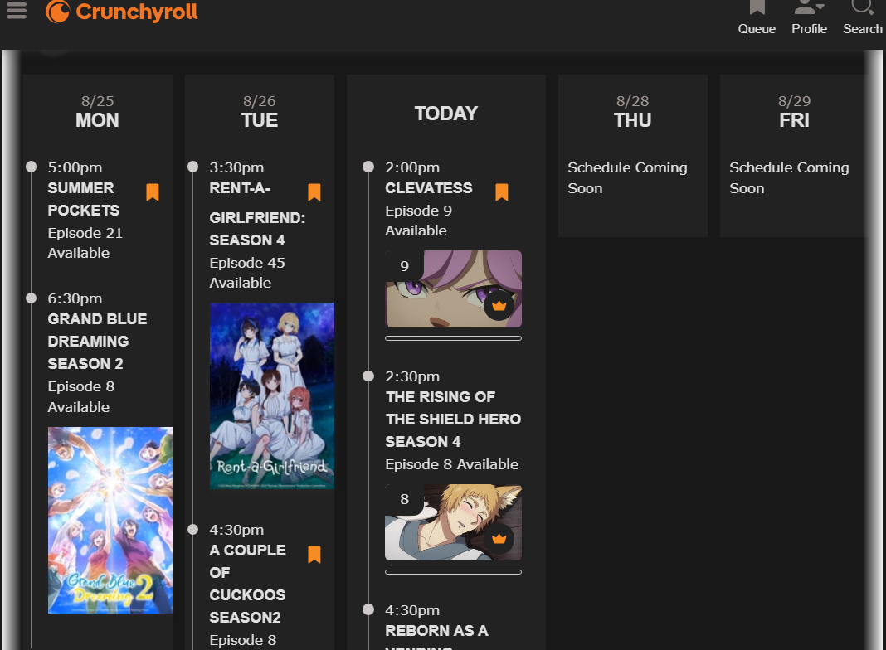
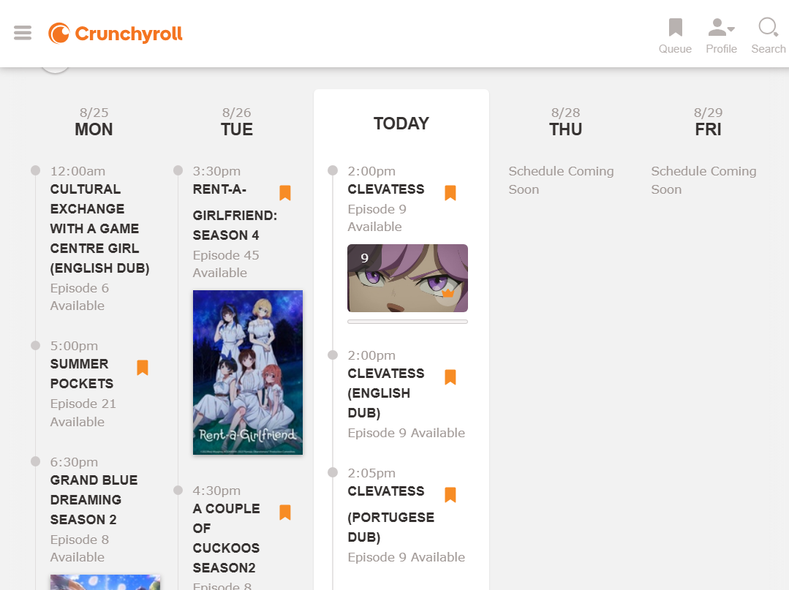
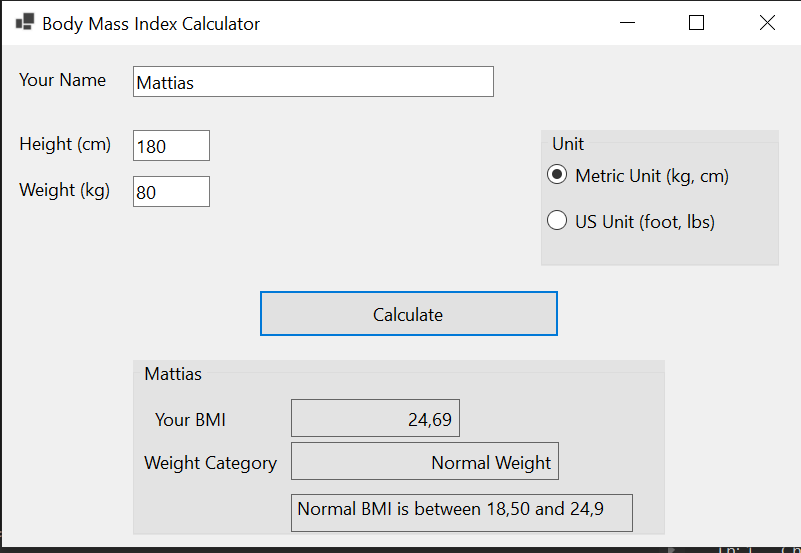
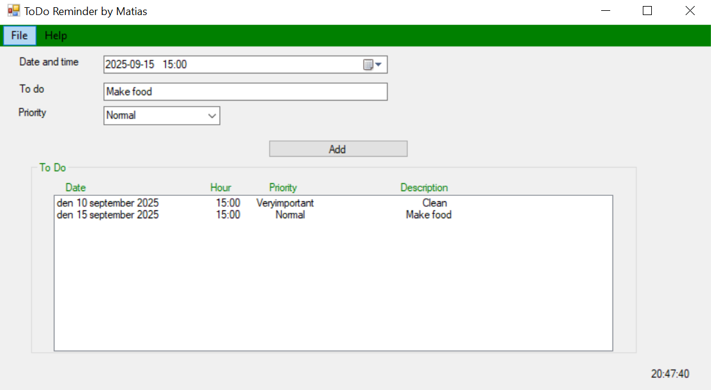
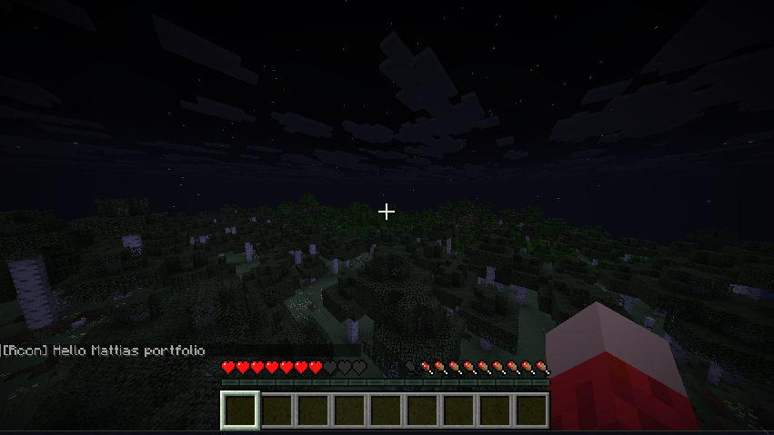
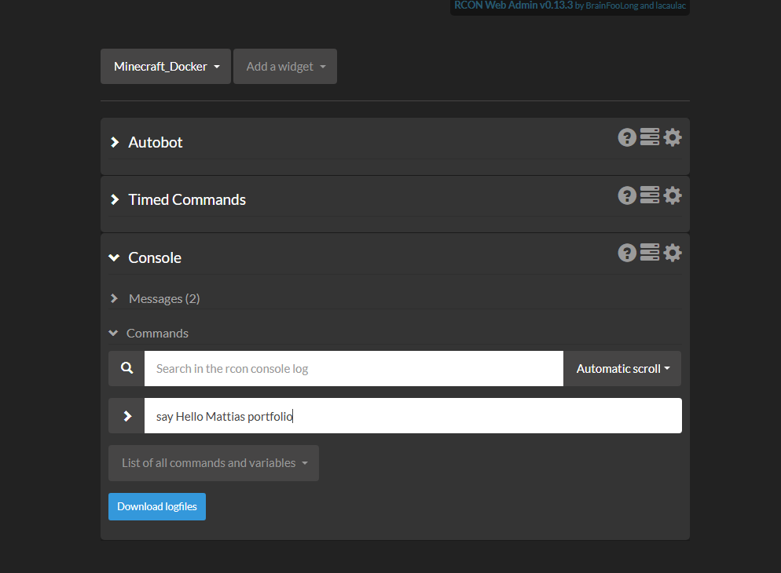
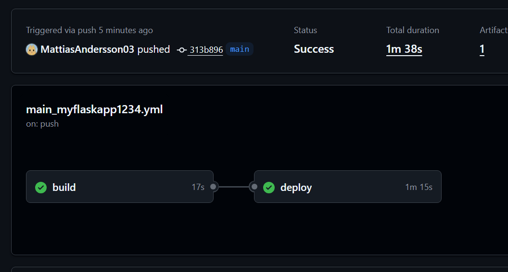
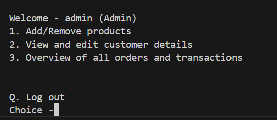
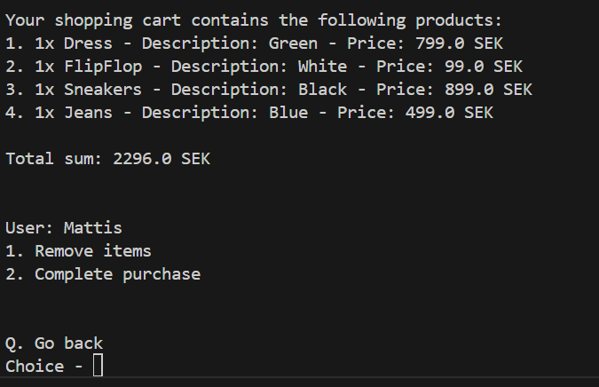
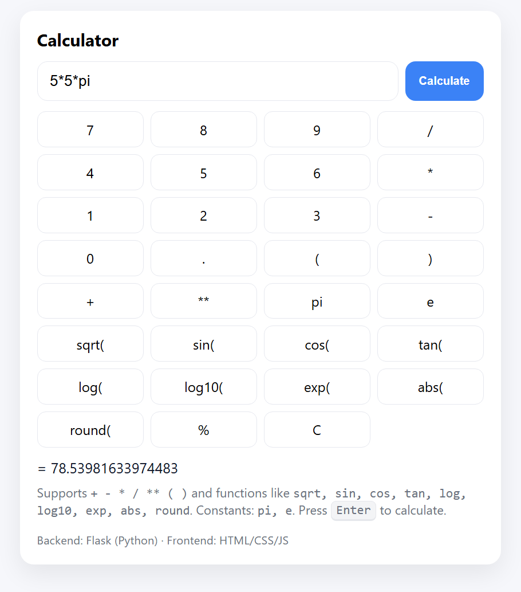

Crunchyroll Calendar Fix – Browser Extension
Still in progress


A browser extension designed for Crunchyroll users who want a cleaner, more user-friendly calendar.
By default, Crunchyroll’s calendar often shows the same series many times because of different language dubs,
which can clutter the entire view. For users who only care about the subbed version, this creates unnecessary clutter.
The extension introduces a dark mode and filters out duplicate entries, so the calendar stays clear and focused on what really matters.
🔗 View on GitHub
Bmi Calculator – C#

A simple Windows desktop application built in C# that calculates your Body Mass Index
(BMI) and classifies your weight category. Users can enter their name, height,
and weight, and choose between metric (kg, cm) or US (foot, lbs) units.
The app then displays the BMI value, weight category, and reference ranges in a clean,
user-friendly interface.
🔗 View on GitHub
ToDoReminder - C#

A Windows Forms application made in C# for managing personal to-do tasks with reminders.
Users can add tasks by selecting a date and time, entering a short description, and choosing a priority level
(e.g., Normal, Important, Very Important).
The app displays all upcoming tasks in a clear list with columns for date, time, priority, and description.
It’s designed to make organizing everyday activities—like cooking, cleaning, or meetings—simple and efficient,
right from the desktop without needing external apps.
You are also able to save your tasks to a file and later reopen the app with that file
to keep your tasks stored and persistent between sessions.
🔗 View on GitHub
Docker Minecraft Server with console ui
Still in progress - only works on local wifi


A project aimed at simplifying the process of setting up and managing a Minecraft server using Docker.
By containerizing the server, installation becomes faster, more stable, and easily repeatable.
For administration, I integrate an existing web UI that allows server management directly in the browser
— including starting/stopping the server, running commands, and monitoring status — without needing to use the terminal.
🔗 View on GitHub
Azure Deployment with GitHub Actions
Experimental project

A very simple test project deploying to Azure using GitHub Actions. It automatically builds and deploys the project to an Azure Web App whenever changes are pushed to the main branch.
🔗 View on Azure
— Not always online
🔗 View on GitHub
Terminal based store - Java


Java Terminal Store is a terminal-based application written in Java that simulates a simple store environment.
The program allows users to log in, browse products, add items to a shopping cart,
place orders, and view their order history — all directly in the command line. It also includes an administrator
role with the ability to add and remove products. By structuring the system with classes such as Customer, Product, Order,
ShoppingCart, and UserSession, I was able to put object-oriented programming principles into practice in a concrete way.
The application is easy to run and provides a clear, menu-driven experience, making it a solid example of both user interaction
and basic system logic in Java.
🔗 View on GitHub
Flask Calculator - Python

This project is a web-based calculator built with Python and Flask on the backend and HTML,
JavaScript, and CSS on the frontend. It supports basic arithmetic, parentheses, and common math functions
like sqrt, sin, cos, and log, as well as constants such as pi and e. The app combines a clean frontend with a simple
backend, making it easy to run, use, and extend with new features.
🔗 View on GitHub